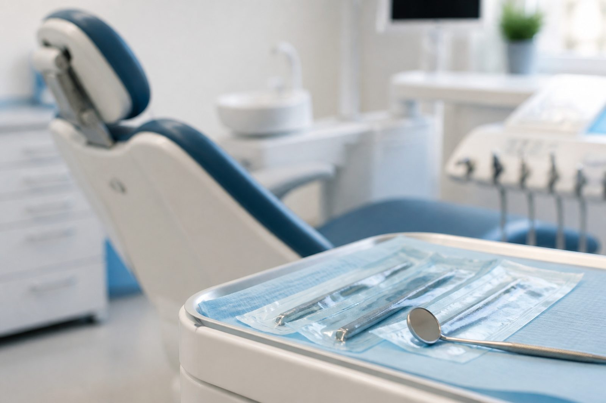
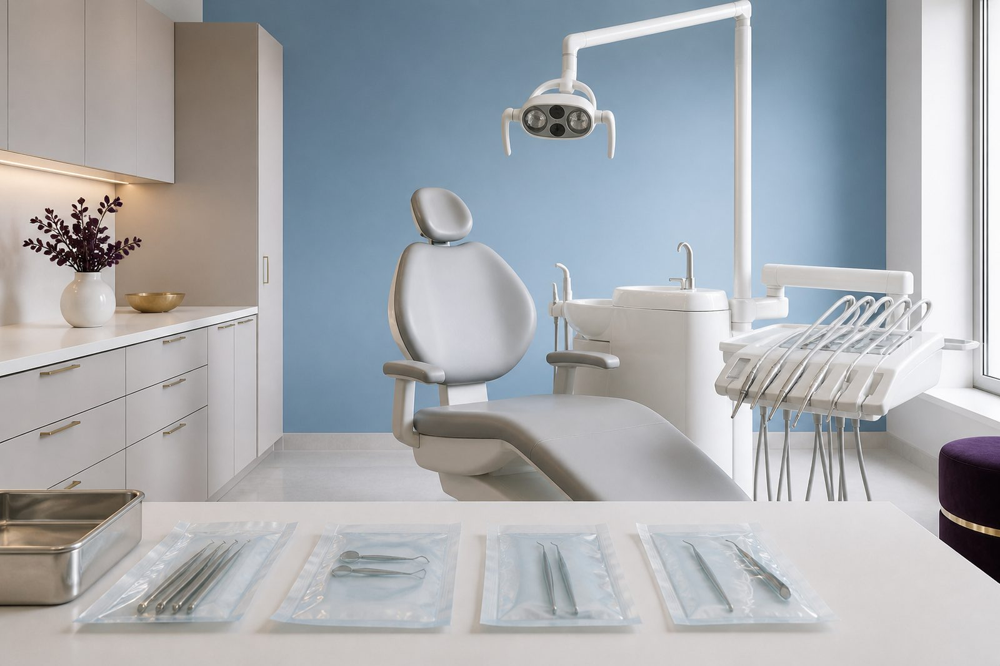

Clinic Crystal Smile
علاجات أسنان مصمّمة لصحتك وراحتك وابتسامتك.
تجمع Clinic Crystal Smile بين العلاج المحافظ، تجميل الابتسامة، التركيبات، التقويم، الجراحة والزراعة. كل علاج يبدأ بفحص وشرح واضح للخيارات.

branch-dental.jpg
فضاء طب الأسنان
الخدمات
خدمات الأسنان لدينا
القائمة أدناه للعلم فقط. يُحدَّد العلاج المناسب بعد الفحص.
العلاج المحافظ للأسنان
علاج التسوّس، ترميم الأسنان المتضررة والوقاية، للحفاظ على أسنانك الطبيعية أطول مدة ممكنة.
اقرأ المزيدتجميل الابتسامة
تفتيح اللون، تصحيح الشكل وتناسق الابتسامة، مع احترام أسنانك الطبيعية.
اقرأ المزيدالتركيبات السنية
تيجان، جسور وتركيبات متحركة لتعويض سن أو عدة أسنان واستعادة مضغ مريح.
اقرأ المزيدتقويم الأسنان والقوالب الشفافة
تصحيح اصطفاف الأسنان والإطباق، بخطة علاج تُوضع بعد التقييم.
اقرأ المزيدالجراحة والقلع
قلع الأسنان، أضراس العقل وإجراءات جراحية صغيرة، تحت تخدير موضعي وبروتوكول تعقيم صارم.
اقرأ المزيدزراعة الأسنان
تعويض سن مفقود بجذر اصطناعي، بعد تقييم العظم وحالة الفم.
اقرأ المزيد
cabinet-crystal-salle.jpg
غرفة علاج الأسنان
سير الجلسة
من الاستشارة الأولى إلى المتابعة
- فحص سريري وصور أشعة عند الحاجة
- شرح التشخيص والخيارات والمُدد
- تقدير التكلفة وبرمجة الجلسات
- تنفيذ العلاج مع ضبط الإطباق
- تعليمات ما بعد العلاج وموعد المراقبة
المعلومات المنشورة هنا عامة ولا تغني عن الاستشارة. كل قرار علاجي يُتخذ بعد الفحص.